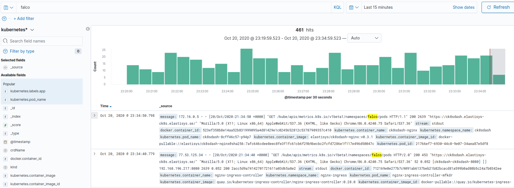
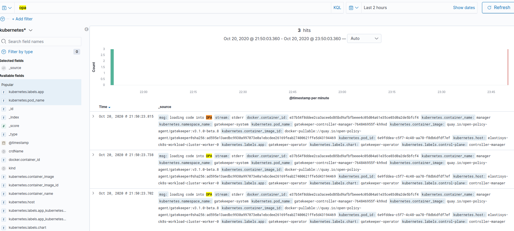

Logging¶
Compliant Kubernetes (CK8s) provides the mechanism to manage your cluster as well as the lifecycle of thousands of containerized applications deployed in the cluster. The resources managed by CK8s are expected to be highly distributed with dynamic behaviors. An instance of CK8s cluster environment involves several components with nodes that host hundreds of containers that are constantly being spun up and destroyed based on workloads.
When dealing with a large pool of containerized applications and workloads in CK8s, it is imperative to be proactive with continuous monitoring and debugging information in order to observe what is going on the cluster. These information can be seen at the container, node, or cluster level. Logging as one of the three pillars of observability is a crucial element to manage and monitor services and infrastructure. It allows you to track debugging information at different levels of granularity.
Compliance needs¶
The requirements to comply with ISO 27001 are stated in ISO 27001:2013. The annexes that mostly concerns logging are:
- Annex 12, article A.12.4.1 "Event Logging" and A.12.4.3 "Administrator and Operator Logs".
- Annex 16 which deals with incident management.
In Compliant Kubernetes, Elasticsearch is separate from the production workload, hence it complies with A.12.4.2 "Protection of Log Information". The cloud provider should ensure that the clock of Kubernetes nodes is synchronized, hence complying with A.12.4.4 "Clock Synchronisation".
Open Distro for Elasticsearch¶
Raw logs in CK8s are normalized, filtered, and processed by fluentd and shipped to Elasticsearch for storage and analysis. CK8s uses fully open source version of Elasticsearch called Open Distro for Elasticsearch.
Open Distro for Elasticsearch provides a powerful, easy-to-use event monitoring and alerting system, enabling you to monitor, search, visualize your data among other things. Kibana is used as visualization and analysis interface for Elasticsearch for all your logs.
Visualization using Kibana¶
Kibana is used as a data visualization and exploration tool for log time-series and aggregate analytics. It offers powerful and easy-to-use features such as histograms, line graphs, pie charts, heat maps, and built-in geospatial support.
When you log into Kibana, you will encounter a page similar to the one shown below.

Since we are concerned with searching logs and their visualization, we will focus on Visualize and Explore Data as indicated by the red rectangle in the figure above. If you are interested to know more about the rest please visit the official Kibana documentation.
Before we dive into Kibana, let us discuss the type of logs ingested into Elasticsearch. Logs in CK8s cluster are filtered and indexed by fluentd into three categories:
-
kubeaudit logs related to Kubernetes audits to provide security-relevant chronological set of records documenting the sequence of activities that have affected system by individual users, administrators or other components of the system. This is mostly related to the ISO 27001 requirement A.12.4.3 "Administrator and Operator Logs".
-
Kubernetes logs that provide insight into CK8s resources such as nodes, Pods, containers, deployments and replica sets. This allows you to observe the interactions between those resources and see the effects that one action has on another. Generally, logs in the CK8s ecosystem can be divided into the cluster level (logs outputted by components such as the kubelet, the API server, the scheduler) and the application level (logs generated by pods and containers). This is mostly related to the ISO 27001 requirement A.12.4.3 "Administrator and Operator Logs".
-
Others logs other than the above two are indexed and shipped to Elasticsearch as others. Such logs are basically your application level logs. This is mostly related to the ISO 27001 requirement A.12.4.1 "Event Logging".
Let us dive into Kibana then.
Data Visualization and Exploration in Kibana¶
As you can see in the figure above, data visualzation and expoloration in Kibana has three components: Discover, Visualize and Dashboard. The following section describes each components using examples.
Discover¶
The discover component in Kibana is used for exploring, searching and filtering logs.
Click Discover in the main Kibana page to access the features provided by it. The figure below shows partial view of the page that you will get under Discover.

As you can see in the above figure, the kubeaudit index logs are loaded by default. If you want to explore logs from either of the other two log indices please select the right index under the dropdown menu marked log index category.
To appreciate Kibana's searching and filtering capability, let us get data for the following question:
Get all logs that were collected for the past 20 hours in host 172.16.0.3 where the responseStatus reason is notfound
We can use different ways to find the answer for the question. Below is one possible solution.
-
Write sourceIPs: 172.16.0.3 in the search textbox.
-
Click Add Filter and select responseStatus.reason and is under field and Operator dropdown menus respectively. Finally, enter notfound under Value input box and click Save. The following figure shows the details.

-
To enter the 20 hours, click part that is labelled Time in the Discover figure above, then enter 20 under the input box and select hours in the dropdown menu. Make sure that you are under Relative tab. Finally, click update. The following figure shows how to set the hours. Note that the data will be automatically updated as time passes to reflect the past 20 hours data from the current time.

Once you are done, you will see a result similar to the following figure.

Visualize¶
The Visualize component in Kibana is to create different visualizations. Let us create a couple of visualizations.
To create visualizations:
- Go to the main Kibana page and click Visual.
- Click Create visualization link located on the top right side of the page.
- Select a visualization type, we will use Pie here.
- Choose the index name or saved query name, if any, under New Pie / Choose a source. We will use the Kubernetes index here.
By default a pie chart with the total number of logs will be provided by Kibana. Let us divide the pie chart based on the number of logs contributed by each namespace. To do that perform the following steps:
-
Under Buckets click add then Split Slices. See the figure below.

-
Under aggregation select Significant Terms terms. see the figure below.

-
Select Kubernetes.namespace_name.keyword under field. See the figure below.

The final result will look like the following figure.

Please save the pie chart as we will use it later.
Let us create a similar pie chart using host instead of namespace. The chart will look like the following figure.

Dashboard¶
The Dashboard component in Kibana is used for organizing related visualizations together.
Let us bring the two visualizations that we created above together in a single dashboard.
To do that:
- Go to the main Kibana page and click Dashboard.
- Click Create Dashboard link located on the top right side of the page.
- Click Add existing link located on the left side.
- Select the name of the two charts/visualizations that you created above.
The figure below shows the dashboard generated from the above steps showing the two pie charts in a single page.

Accessing Falco and OPA Logs¶
To access Falco or OPA logs, go to the Discover panel and write Falco or OPA on the search textbox. Make sure that the Kubernetes log index category is selected.
The figure below shows the search result for Falco logs. 
The figure below shows the search result for OPA logs. 
Running Example¶
The user demo application already includes structured logging: For each HTTP request, it logs the URL, the user agent, etc. Compliant Kubernetes further adds the Pod name, Helm Chart name, Helm Release name, etc. to each log entry.
The screenshot below gives an example of log entries produced by the user demo application. It was obtained by using the index pattern kubernetes* and the filter kubernetes.labels.app_kubernetes_io/instance:myapp.

Note
You may want to save frequently used searches as dashboards. Compliant Kubernetes saves and backs these up for you.